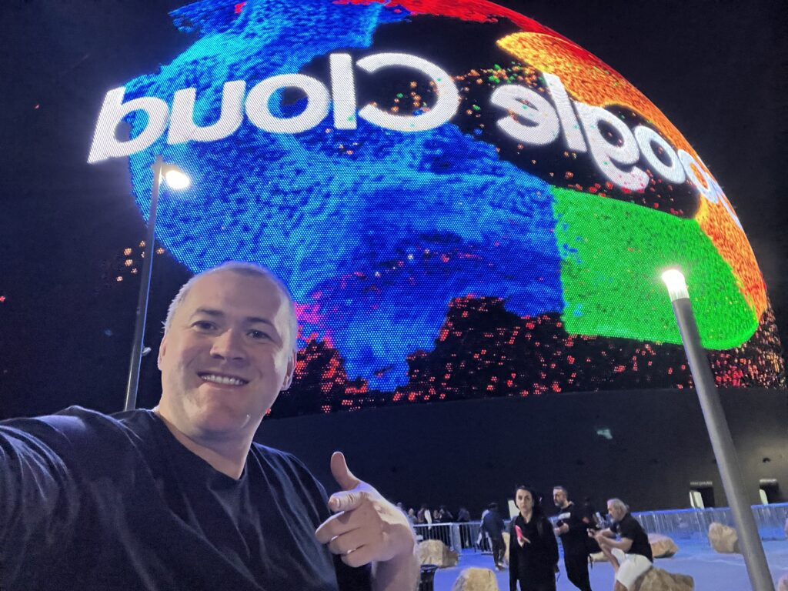
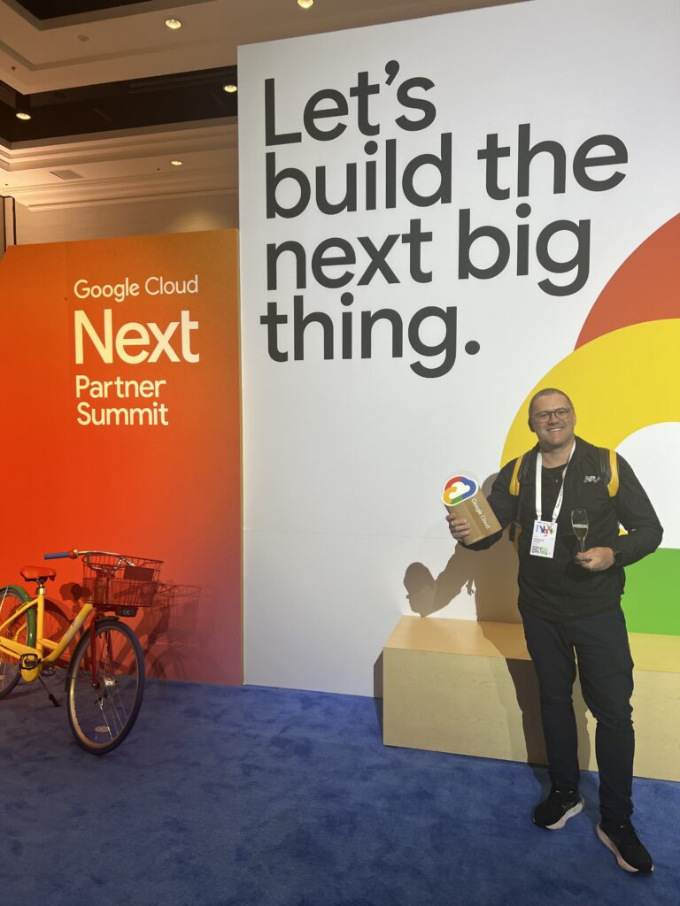

Mais uma vez, tivemos a oportunidade de participar do Google Cloud Next, um dos maiores eventos de tecnologia do mundo, e, como nas edições anteriores, me surpreendi com a quantidade de novidades e insights que ele proporcionou. O Google Next 2024 foi o maior de todos os tempos e dessa vez 
Estar na vanguarda da tecnologia se tornou crucial para o sucesso dos nossos clientes A tecnologi
a está moldando todos os aspectos de nossas vidas, desde a forma como trabalhamos e nos comunicamos até
a maneira como consumimos produtos e serviços.
Neste ano nos aprofundamos em temas específicos que são relevantes para a Guinux, c
omo produtividade e colaboração com Google Workspace, Segurança na nuvem e inteligência artificial, principalmente no Gemini.
Visão do futuro da tecnologia: Fui apresentado a diversas tendências tecnológicas que estão moldando o futuro dos negócios, e que me ajudarão a tomar decisões mais assertivas para meus clientes, principalmente tratando-se de produtividade com inteligência artificial.
Em especial, gostaria de destacar alguns dos momentos que mais me marcaram:
A palestra de Thomas Kurian, CEO do Google Cloud: Kurian falou sobre a importância da nuvem para a transformação digital das empresas, e como o Google Cloud está ajudando as empresas a inovar e crescer.
Sessões intensas de Inteligência Artificial Generativas: Sessões que nos proporcionou uma visão geral de como essas tecnologias do Google Cloud podem ser usadas para melhorar os negócios, e me inspirou a explorar novas possibilidades para meus clientes, destaque para o Gemini for Workspace.
Confira os principais anúncios do Google Cloud que foram feitos no Next 2024.
A visita à área de demonstrações: Na área de demonstrações com consultores técnicos do Google Cloud, pude ver de perto como o Google, está sendo usado por empresas de todos os portes e setores, foi muito interessante conhecer as diferentes abordagens.

Tivemos a honra de participar do Partner Summit, um programa exclusivo para parceiros do Google Cloud, o Partner Summit ofereceu aos participantes acesso privilegiado à liderança do Google Cloud, permitindo que a Guinux aprofundasse nas estratégias e alinhamento da parceria, além disso participamos de uma restrita conversa com o board estratégico do Google Cloud.Guinux: Parceiro de destaque do Google Cloud em Curitiba e região
Com grande orgulho, a Guinux se consolida como um dos parceiros de destaque do Google Cloud, no segmento SMB em Curitiba e região. Nossa expertise no Google Workspace, aliada ao nosso compromisso com a excelência no atendimento, e os casos de sucesso comprovados garantiram a Guinux como parceiro referência em Google Workspace.
Uma Experiência Incomparável
O Google Next 2024 foi uma experiência incomparável. O evento proporcionou acesso a informações valiosas, oportunidades de aprendizado e networking, a Guinux segue na vanguarda da tecnologia proporcionando acesso as melhores tecnologias para os nossos clientes.
Agradeço ao Google Cloud por mais uma vez me proporcionar essa oportunidade incrível.
*Acesse a cobertura do evento no destaque do nosso Instagram. (@guinuxti)
Confira alguns momentos do evento


Valeu Google Cloud Next e até 2025!